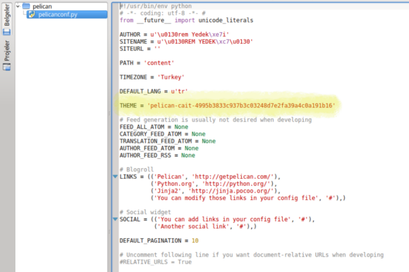

PELİCAN İLE OLUŞTURULAN BLOG SAYFASINI KİŞİSELLEŞTİRME
Şimdi sıra geldi Pelican ile kurduğumuz siteye birtakım görsel özellikler eklemeye. Bunu tema ekleyerek sağlayabiliriz ancak ben daha çok bana özel olmasını istediğim için mevcut tema üzerinde bazı değişikler yapmanın yollarını aradım, buldum ve sizlerle paylaşacağım. ;)
Öncelikle tema eklemeyi halledelim ardından kişiselleştirme kısmına geçelim. Sistemde yüklü temaları görmek ve listelemek için kullanacağımız komut;
pelican-themes -l
Burda gördüklerimiz Pelican'ı kurduğumuzda paket tarafından yüklü gelen temel temalardır. Bunlar dışında temalar kullanmak istediğimizde indirmemiz gerekir. Öncelikle github'da pelican-theme reposuna gider ve repoyu bilgisayarımıza indiririz. "zip" halinde inecektir. İçinde pelican-theme-master adında bi dizin onun içinde de temaların bulunuduğu tema isimlerinde dizinler vardır. Zip'i istedeğimiz yere çıkaralım ben hepsi bi arada bulunsun diye theme adında bir dizin oluşturdum ve oraya çıkarttım. Burada her bir temanın kendine ait dizini olacak ve bu dizinlerin içinde temaların ekran görüntüsü bulunacak. Onlara bakarak karar verebilirsiniz. Ardından terminalden aşağıdaki komut ile istediğim temanın dizinine kadar ulaşıp pelican üzerine indiriyorum.
pelican-themes --install /path
"/path" ile gösterdim yere bulunduğu dizine kadar temanın yolunu yazacağız. Böylece temayı indirmiş oluyorum, listelediğimde artık sistemde yüklü temalar arasında yeni indirdiğim temayı da göreceğim.
Daha sonra Pelican'ı başlattığım dizinin içinde oluşan "pelicanconf.py" dosyasını açıp aşağıda sarı ile taralı kısımdaki gibi " THEME = 'TEMA_ADI' " satırını ekliyorum. Temayı pelican üzerinden indirdiğimiz için path vermemize gerek yok. " make devserver " komutu ile siteyi lokal olarak çalıştırdığınızda temayı eklediğinizi göreceksiniz.

Artık sitemize uyguladığımız temayı bir nebze kişiselleştirmeye başlayabiliriz. Tabi bu istek dahilinde gerçekleştireceğiniz bir şey. Eğer ki sayfa görünümünden tamamen memnunsanız en azından size yeterliyse bu adımları gerçekleştirmeye tabiki gerek yok. Ancak temada ufak değişiklikler yapmak isterseniz neleri değiştirebileceğinizi görmek isterseniz okumaya devam etmelisiniz. Şunu söylemeliyim ki bu değişikliklerin bir kısmını yapabilmek ve anlayabilmek için temel düzeyde html bilmelisiniz. Css bilmeniz halinde yapabileceğiniz değişikliklerin miktarı artacaktır.
Proje dizinimizin içindeki output dizininde "make devserver" komutunu verdiğimiz zaman tema ve content'in bileşenleri html ve css kod ve etiketlerine dönüştürülerek tutulur. Tema daha çok css kodları ile saklanır. Markdown formatındaki içeriğimiz format kurallarınca html etiketlerine dönüştürülür ve formatta kullandığımız işaretlemeler de sayfaya biraz stil katar. Bu dönüşümü sağlayanın Static Web Generator olan Pelican olduğunu önceki başlağımızda söylemiştik.
Yaptığım birkaç değişikliği şöyle sıralayabilirim:
- Benim kullandığım temada başlık kısmının yanında bir kahve bardağı resmi oluyordu. Buna benzer bir şeydi. Output dizininde oluşan .html uzantılı dosyalarda kodları ve etiketleri inceleyerek 'ye benzer bi etiket satırı buldum. Bunu sildiğimde bardak resmi kayboldu. Ben de onun yerine bir bilgisayar resmi koyup koyamayacağımı merak edip google'da araştırdım. ketiketlerinin olduğu yani arasında bir yere
<link rel="stylesheet" href="https://maxcdn.bootstrapcdn.com/font-awesome/4.4.0/css/font-awesome.min.css">
linkini ekleyip <i class="icon coffee" etiketinde icon-coffee yerine bu adresten seçeceğiniz bir ikonun unicode'unu yazarak tema ile gelen kahve bardağını değiştirebilirsiniz.
.html dosyalarında gezinirken değiştirdiğim diğer bir şey ise sayfa başlığının altında "Proudly powered by Pelican and Python." diye başlayıp pelican ve tema bilgilendirmesi yapılan iki satırı kaldırmak oldu. Bu yazıyı hmtl dosylarında bulup sildim. footer kısmında bulunuyor. Öncesinde yerini değiştirdiğimi de söylemeliyim. footer kısmından alıp body'nin en altına yerleştirdim. Ben denemedim ama css kodları ile yazının rengini değiştirebilirsiniz size kalmış deneyin :)
Kişisel bir blog sayfası olduğu için bir profil resmi eklemek gerektiğini düşündüm. Bunun dairesel olanları görsel olarak benim daha çok hoşuma gidiyor. Ben de html kullanarak dairesel bir profil resmi eklemek için düştüm gogle yollarına.
<a style="display: inline;" href=""><center><img style="width: 200px; height: 200px; border-radius: 200px;" title="Swan" src="avatar.jpg" alt="Swan" /></center></a>
yukarıdaki
Benzer değişiklikler yapılabilir. Ek olarak değişiklikler yapmak istersek html ve css bilgisine daha fazla ihtiyaç duyarız. Özet olarak html üzerinden yapacağımız değişiklikleri output dizinimizde oluşan .html uzantılı dosyalarda yaparız. Sahip olduğumuz html bilgisi ile burdaki kodların ve etiketlerin ne demek olduğunu anlayıp kendimizce ufak değişiklikler yapabiliriz. İleri seviye html bilgisi ile de eklemeler yapabiliriz. Ancak şunu unutmamalıyız ki html bir web sitesinin iskeletidir, ona renk katan css ve js kodlarıdır. Dolayısıyla css bilgisine sahip olmak temayı baz alarak kendi zevkimize göre bir görünüm elde etmemizi sağlar. css kodlarında değişikliği ise yine output dizininde yaparız. Output dizininin içinde theme dizini onun içinde de css, font gibi birkaç dizin oluşmuş olacak. Bunların içindeki .css uzantılı dosyalarda değişiklik yapılabilir. İyi eğlenceler :)